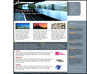
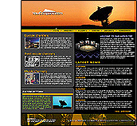

|
Шаблон сайта - это готовый дизайн для Вашего сайта.
Другими словами, шаблон сайта это набор графических элементов,
из которых, как из “кубиков”, строится внешний вид страниц
Вашего сайта.
Шаблоны сайтов довольно просты в использовании и не требуют
специальных навыков для работы с ними, поэтому подойдут
как для начинающих веб-мастеров, так и для профессионалов.
В большинстве случаев, для работы с шаблоном сайта,
необходимы только лишь базовые знания HTML (верстка).
Знания HTML необходимы для того, чтобы наполнить
страницы сайта содержанием: добавить текст, ссылки, картинки
и т.д.
|
|
|  |
Перед вами уникальный трёх-колоночный шаблон на бизнес
тематику выполненный в строгом и продуманном стиле в
слиянии белого и серого цветов. В правой части страницы
располагается удобное двух-колоночное главное меню.
В данной теме имеется возможность размещения видео
роликов и рекламы 120х600pix. |
|  |
для вас представлена трёх-колоночная тема, выполненная
в слиянии чёрной и жёлтой гаммы цветов, дизайн шаблона,
выполненный в спокойных и неярких цветах не раздражает
глаз. В правой части блога вы увидите двух-колоночное
главное меню, в теме также присутствует календарь. |
|